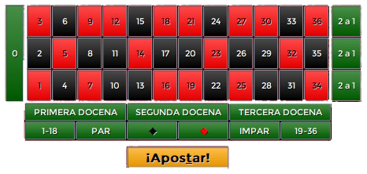
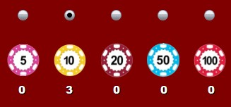
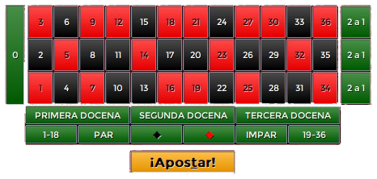
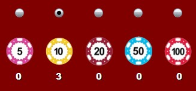
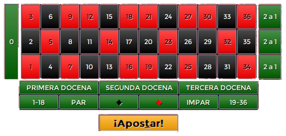
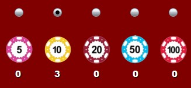

 
 
Los principales elementos de interacción con el juego son los siguientes:
 
| Tipo | Descripción | Fichas obtenidas (ganadas x apostadas) |
| Rojo/Negro | El jugador apuesta al color del número ganador (rojo o negro) | 1 x 1 |
| Par/Impar | El jugador apuesta a que el número ganador sea par o impar | 1 x 1 |
| Mitad | El jugador apuesta a que el número ganador está entre 1 y 18 (1ª mitad) o 19 y 36 (2ª mitad) | 1 x 1 |
| Docena | El jugador apuesta a que el número ganador corresponda a una de las tres docenas | 2 x 1 |
| Columna | El jugador apuesta a que el número ganador corresponda a una de las tres columnas (filas horizontales del tapete) | 2 x 1 |
| Número | El jugador apuesta a que el número ganador está en la casilla numérica en cuestión, incluyendo el 0 | 35 x 1 |